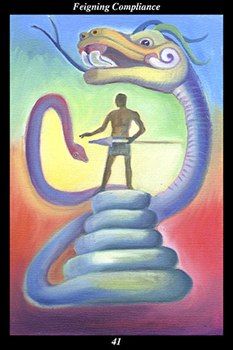

 | IMAGE A shadowy male warrior stands upon the coils of a great serpent, forcing it to submit to his will at spear point. He has, however, mistaken the snake’s tail for its head, which rises above and behind him, ready to strike. |
INTERPRETATION
This hexagram depicts the art of resistance under threat, intimidation, or subversion. The great serpent symbolizes the energy and power of those who resist domination. Its coils symbolize the convolutions and intricacies of the strategy of invisible defiance. That the serpent’s tail is shaped to look like its head means that you are able to disguise your true intent behind a mask of conformity. That the serpent’s head is poised to strike means that you remain vigilant, neither missing any real opportunity for resistance nor getting lulled into a false sense of security. Taken together, these symbols mean that you lull your captor into a false sense of security while awaiting the right moment to reclaim your freedom.
ACTION
There is no true victory in force because those overcome eventually use the moral high ground to achieve their independence. Such a turn of events is made inevitable by the fact that the spirit of those who oppress is progressively sickened by their past actions at just the time that the spirit of those oppressed is made progressively stronger and finer by the hardship they have endured. Force corrupts those who use it and ennobles those who endure it. For this reason, those who use force fail because they are brutish and short-sighted while those whose spirit cannot be dominated succeed because they are humane and wise. When those who are stronger seek to dominate and control us then we must develop a strategy that ensures we defeat our oppressors without repeating their mistakes. In this sense, it is necessary that we commit beforehand to making no attempt to exact revenge from those who have wronged us. In order to emerge unscathed from domination we have to recognize the indomitable nature we have inherited from our ancestors and then ally ourselves with others committed to preserving inner independence until outer independence can be openly celebrated. Because you take the time to gather inner strength without arousing any suspicion, you succeed in freeing yourself without harming another. Because your humaneness shines on your oppressors, you succeed in freeing them without harming yourself.
INTENT
The spirit warrior refrains from attempting to dominate anyone in any way, for fear of the inevitable and justifiable backlash it would produce. Others are not necessarily so farsighted, however: at a time when force and intimidation are openly used to control our actions and shape our attitudes, it is imperative that we train ourselves to resist every tendency to succumb to mental or spiritual tyranny. By adopting a demeanor of naive complacency while making our true thoughts and feelings unreadable, we make it possible to live with oppression without being conquered by it: using visible compliance to mask invisible defiance, we maintain our reverence toward all things so that we never wrong others the way we were wronged.
SUMMARY
When those who are more powerful demand you submit to their will, do not just pretend to go along with them—make a show of agreeing with them and working for their goals as if they were your own. Keep your true feelings to yourself, work to find kindred spirits who can be trusted, and gather your strength until the moment to reclaim your independence and freedom arrives.
THE LINE CHANGES
1° Many around you exercise no self-control and seem resigned to wandering purposelessly through life. Though you empathize with them, do not allow them to hold you back. Look to others outside your current sphere as examples of what you wish to be—train to acquire the skills you will need.
2° The most profound relationships cannot be anticipated—support and acceptance come from an unlikely source. Grief gives way to gratitude, anxiety gives way to enthusiasm—your hard work and good works bring you recognition. Study the successes of your predecessors for inspiration.
3° Prove your dedication to those around you and they see your advance as their own—earn their trust and they propel you forward. This is a difficult position, remaining true to your peers and adapting to the needs of those above, but you manage it well. Just be a conduit and communicate clearly.
4° When people enter into a cause for the wrong reason, they will perceive ethical standards to be rules filled with intentional loopholes. The bigger the decisions you make, the less you can try to take advantage of loopholes. Personal gain must be completely set aside—work for the common good.
5° Experienced people understand that success and failure depend more on circumstances than personal ability. Simply do your best in fulfilling your responsibilities—regardless of the outcome, your efforts will enhance your reputation. This project will lead to a more important one.
6° When people do not recognize their own essence, they do not recognize the essence of others. This is the path of repression and aloneness. Look for the selfsameness inherent in everyone—self-importance and comparing yourself to others is not the road of freedom.